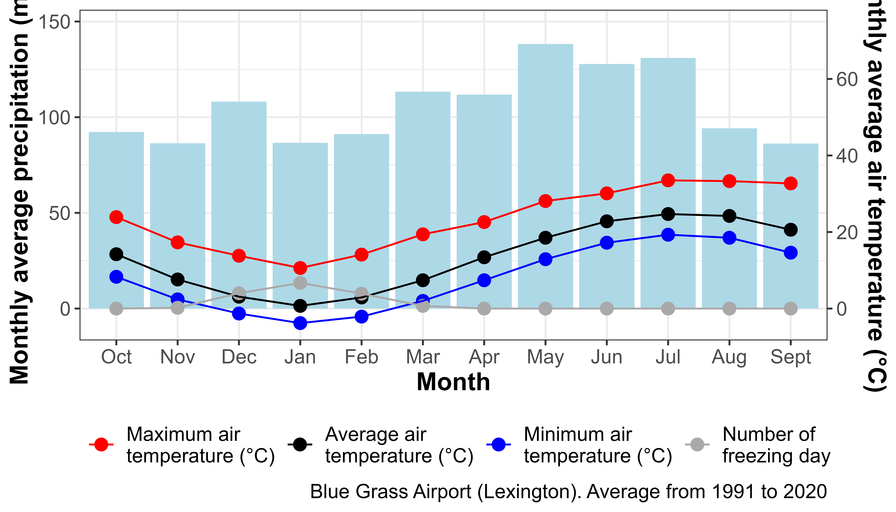
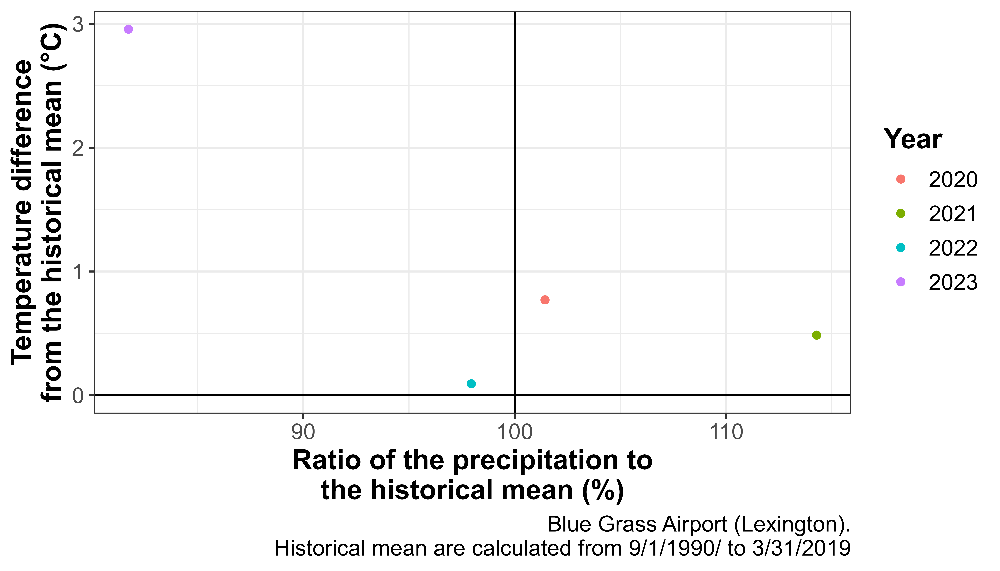

Ombrothermic diagram
#> $table
#> # A tibble: 48 × 4
#> month rain variable value
#> <ord> <dbl> <chr> <dbl>
#> 1 Jan 86.6 "Average air\ntemperature (°C)" 0.7
#> 2 Jan 86.6 "Minimum air\ntemperature (°C)" -3.8
#> 3 Jan 86.6 "Maximum air\ntemperature (°C)" 10.6
#> 4 Jan 86.6 "Number of\nfreezing day" 6.7
#> 5 Feb 91.2 "Average air\ntemperature (°C)" 2.9
#> 6 Feb 91.2 "Minimum air\ntemperature (°C)" -2.1
#> 7 Feb 91.2 "Maximum air\ntemperature (°C)" 14.1
#> 8 Feb 91.2 "Number of\nfreezing day" 3.9
#> 9 Mar 113. "Average air\ntemperature (°C)" 7.4
#> 10 Mar 113. "Minimum air\ntemperature (°C)" 2
#> # ℹ 38 more rows
#>
#> $diagram
Weather anomaly
#> $data_thirthy_years_avg
#> # A tibble: 1 × 2
#> rain T_air_avg
#> <dbl> <dbl>
#> 1 648. 8.1
#>
#> $data_selected_years
#> # A tibble: 4 × 5
#> year rain T_air_avg ratio_precipitation_historical_…¹ difference_temperatu…²
#> <chr> <dbl> <dbl> <dbl> <dbl>
#> 1 2020 658. 8.87 101. 0.771
#> 2 2021 741. 8.59 114. 0.486
#> 3 2022 635 8.19 97.9 0.0928
#> 4 2023 530. 11.1 81.7 2.96
#> # ℹ abbreviated names: ¹ratio_precipitation_historical_mean_percentage,
#> # ²difference_temperature_historical_mean
#>
#> $plot_selected_years